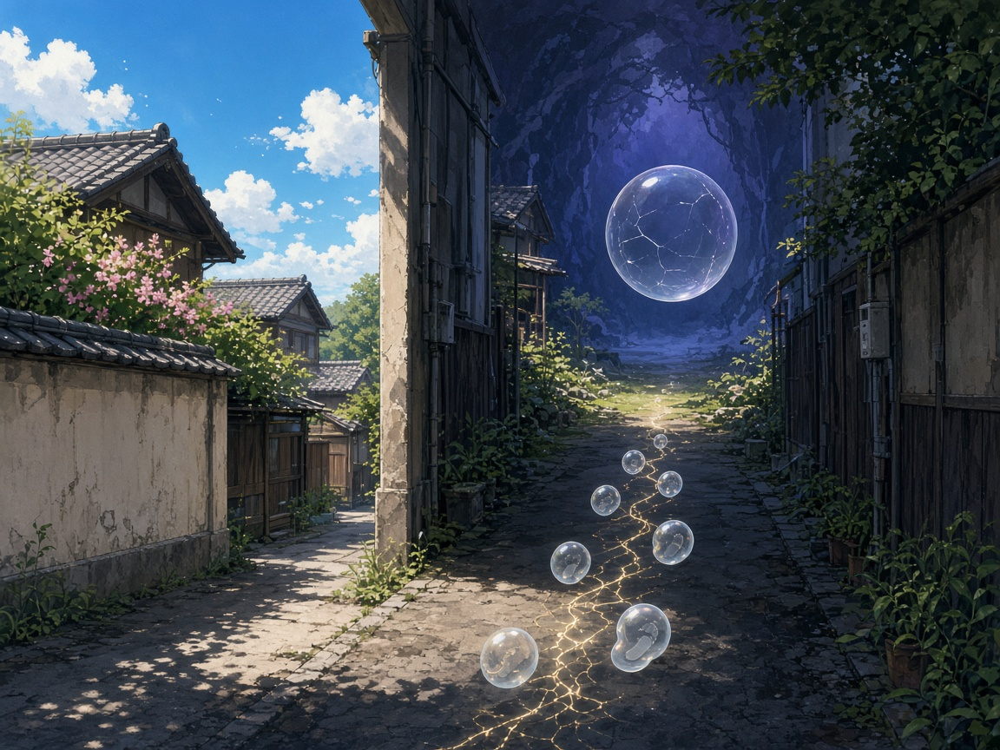

一致する路地
路地裏異世界作者: チョコ

晴れた日だった。空は薄く青くて、影の縁がはっきりしていた。私は駅から一本外れた細い道を歩いていた。地図アプリは正しい位置を示しているのに、目の前の看板の字が、記憶の字と一画だけ違って見えた。確認したくなって、路地に入った。日向から日陰へ、三歩。それだけのつもりだった。
路地の奥で、空気の温度が一段下がった。悪い冷え方ではない。ビルの影に入ったときの、普通の低下だ。なのに靴音だけが、奇妙にきれいに響いた。左右の壁は見慣れた色だ。排水管も、錆びた階段も、置いてある自転車も、さっき通りで見た景色の延長に見える。延長なのに、私は足を止めた。止めた理由は、はっきりしている。地面に落ちている影の形が、太陽の位置と合っていなかったからだ。
空は晴れている。角を出れば、さっきの青が見えるはずだ。振り返ると、入り口の光は残っている。逃げ道はある。それでも、影の向きがおかしい。私はポケットからノートを出した。いつも持ち歩く、短いチェック用の紙だ。「中身が同じか」「場所は、いま見ている場所か」。二行しか書いていない。私は地味な確認が好きだ。地味な確認を飛ばした朝だけ、世界がすべることを知っている。
路地の床を見た。アスファルトのひびが、細い光を含んでいた。ひびは壊れの予告というより、道筋に見えた。踏むと、音はしない。代わりに、足元から小さな泡が一つ浮かぶ。割れない泡だ。表面に、いま踏んだ位置のざっくりした形が映る。もう一歩進むと、また一つ。同じ向きに歩けば、泡の並びも同じになる。私は試しに、さっきの足跡を正確にたどって戻った。泡は、来たときと同じ順番で消えた。再現できる。胸のあたりが、静かになった。
「美しい」と、また口に出しそうになったので、噛み殺した。
異世界、という言葉は大げさだ。ここにあるのは、派手な魔法ではない。同じ入力なら同じ出力が出る道だ。ただし、入り口の光の向こう——さっきまで私が見ていた通り——と、この路地の奥とで、「同じ」の指す場所がずれている。壁の落書きの一文が、表通り側では「まためぐる」で、路地側では「また測る」になっていた。一文字の違いだ。ハッシュで言えば、全体が別物になる差だ。人はたいてい、その一文字を物語だと思って読み飛ばす。私は読み飛ばせない。
駅のアナウンスが、遠くで一度だけ聞こえた。こちらの時間は止まっていない。止まったように感じるのは、確認の手数だけだ。私は自転車のカゴに手を伸ばさなかった。触ると、また泡が増える。増えること自体は害ではない。害になるのは、増えた泡を「証拠」だと思い込むことだ。証拠は、場所とセットでしか成立しない。
奥へ進むと、小さな広場のような空き地があった。中央に、割れたまま割れない大きな泡が浮かんでいる。中には何もいない。いや、何もないことが、はっきり見える。触れようとしてやめた。触れた瞬間に、こちらの世界の番号が一つ動く気がしたからだ。番号が動くこと自体は怖くない。動いたあとに、戻る場所を取り違えるのが怖い。
私はノートの二行をもう一度読んだ。中身が同じか。場所は、いま見ている場所か。路地の泡は、一つ目には答えてくれる。二つ目には、答えない。答えないものを、最後は自分の目で見る。私は入り口の光へ戻った。泡は、来たときと逆順に消えていった。通りに出ると、看板の字は記憶どおりだった。影の向きも、太陽と合っていた。
ふと路地裏へ入ってみると、そこは異世界だった——と言っていいのかは、まだ決めていない。決めていいのは、戻ったあとの確認だけだ。私は空を見た。晴れのまま。青は、測らなくても青だった。それでも私は、メモの余白に今日の日付と、「路地、一文字差」とだけ書いた。物語にするなら、このあとすごい発見があるべきなのかもしれない。私の語り口では、すごい発見より、取り違えなかった朝の方が残る。
取り違えは、派手な事件より先に、静かな朝を壊す。